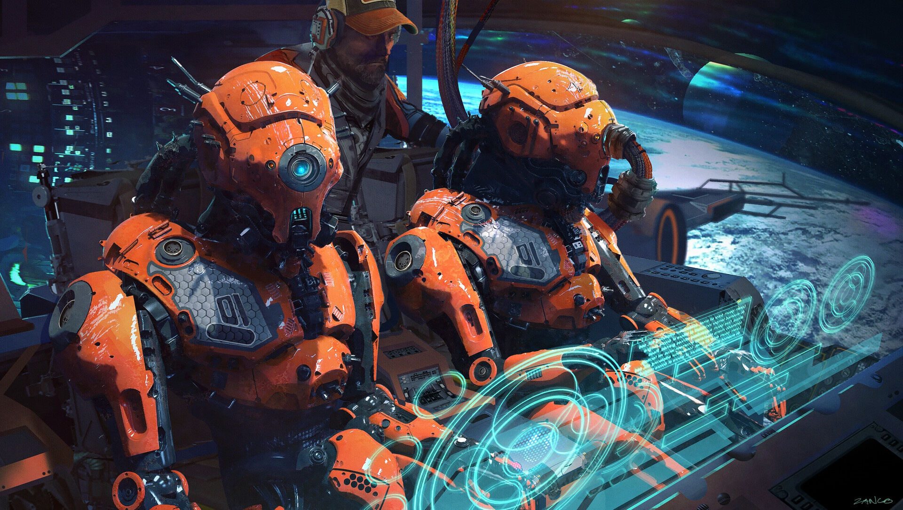
Robots have a wide variety of use cases that make them the ideal technology for the future. Soon, we will see robots almost everywhere. We’ll see them in hospitals, hotels and even on roads.
Is there anything more science fiction-like than autonomous vehicles? These self-driving cars are no longer just imagination. A combination of data science and robotics, self-driving vehicles are taking the world by storm. Companies like Tesla, Ford, Waymo, Volkswagen and BMW are all working on the next wave of travel that will let us sit back, relax and enjoy the ride.
It’s not science fiction anymore. Robots can be seen all over our homes, helping with chores, reminding us of our schedules and even entertaining our kids. The most well-known example of home robots is the autonomous vacuum cleaner Roomba.
Shipping, handling and quality control robots are becoming a must-have for most retailers and logistics companies. Because we now expect our packages to arrive at blazing speeds, logistics companies employ robots in warehouses, and even on the road, to help maximize time efficiency. Right now, there are robots taking your items off the shelves, transporting them across the warehouse floor and packaging them.
Robots have made enormous strides in the healthcare industry. These mechanical marvels have use in just about every aspect of healthcare, from robot-assisted surgeries to bots that help humans recover from injury in physical therapy.
The manufacturing industry is probably the oldest and most well-known user of robots. These robots and co-bots (bots that work alongside humans) work to efficiently test and assemble products, like cars and industrial equipment. It’s estimated that there are more than three million industrial robots in use right now.
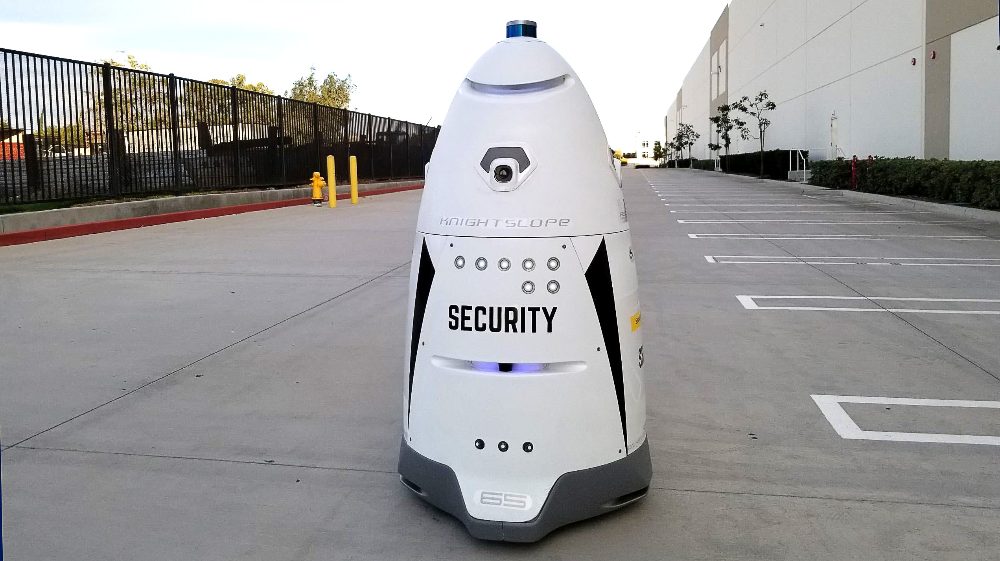
A security robot is the one capable of performing tasks that can help in security missions
Read More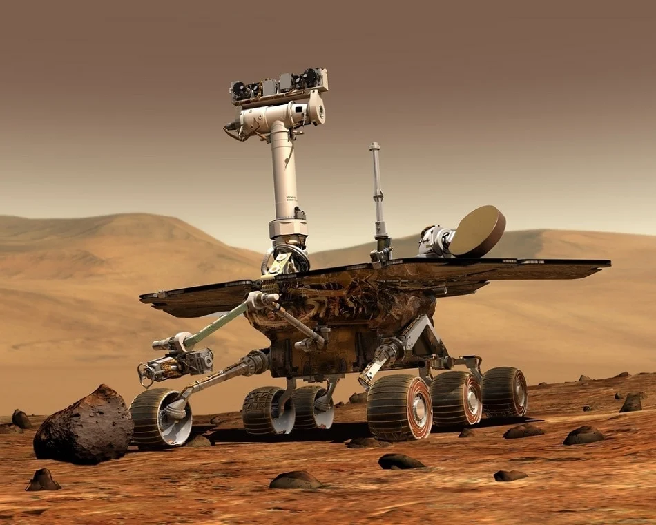
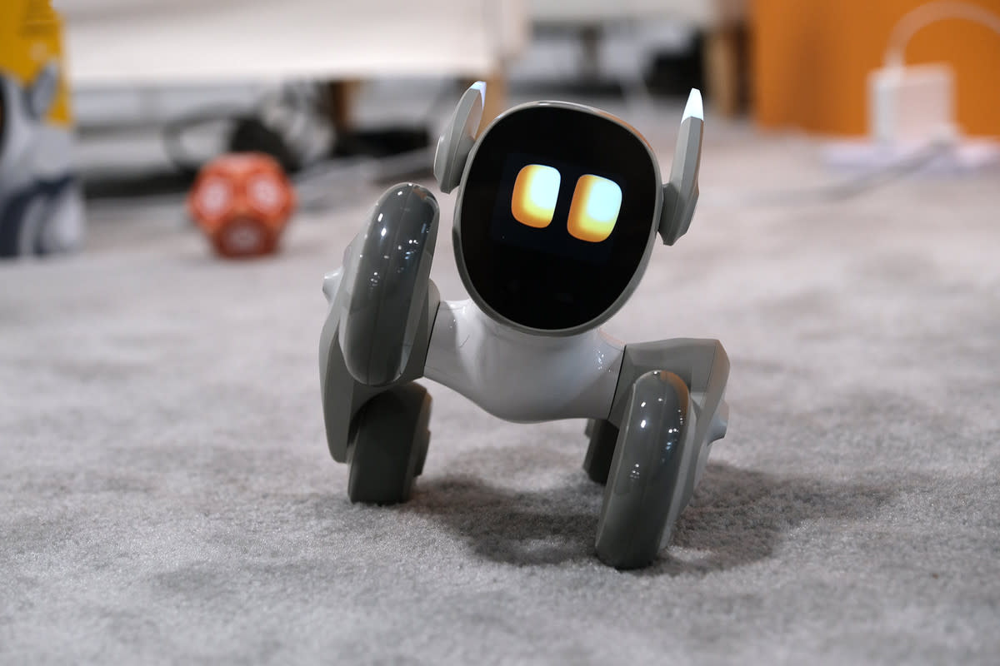
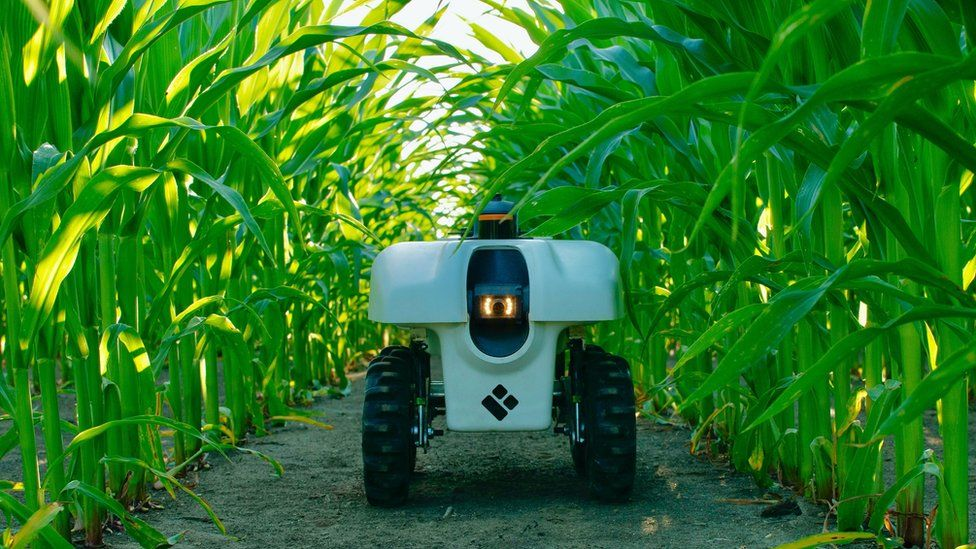
Crop condition identification and corresponding chemical application, spraying or harvesting
Read More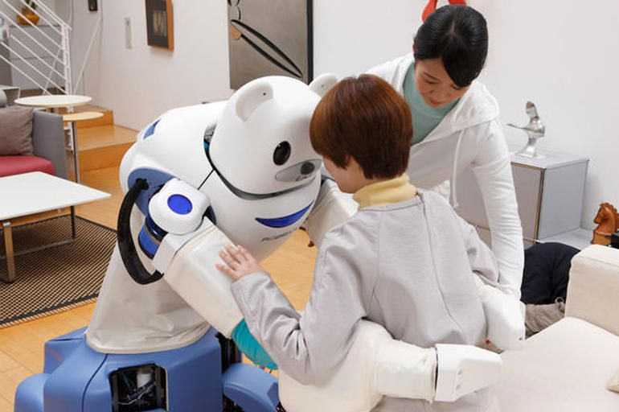
in hospitals and treatment centers to improve quality of care and patient outcomes.
Read More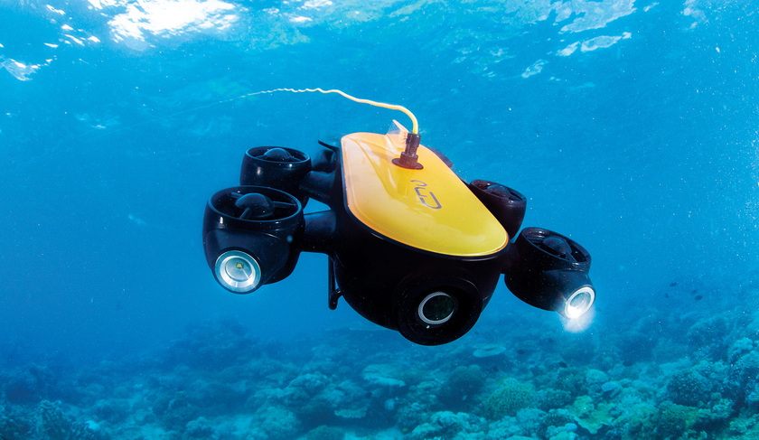
remotely operated vehicles are often used when diving by humans is either impractical or dangerous
Read More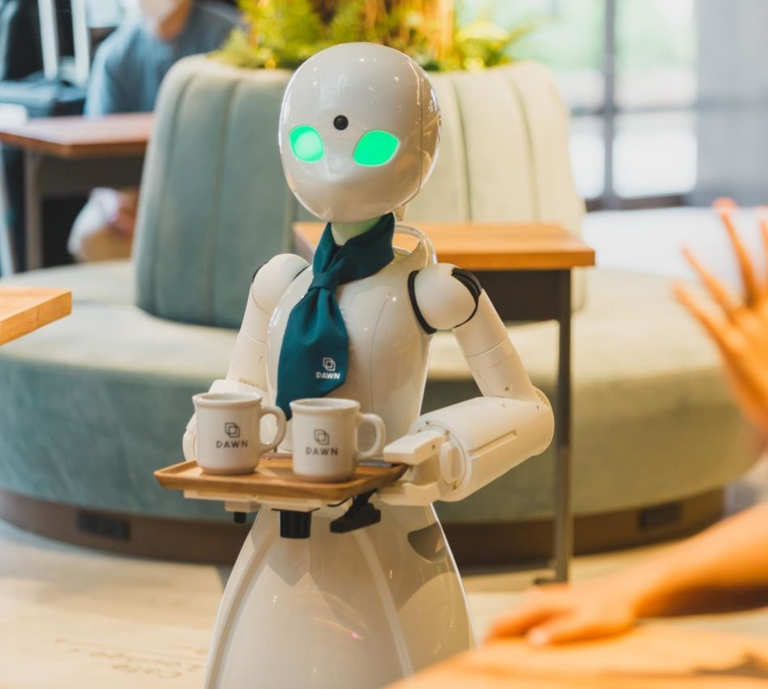
allows food and beverage producers quickly adapt to new products and delivery requirements
Read More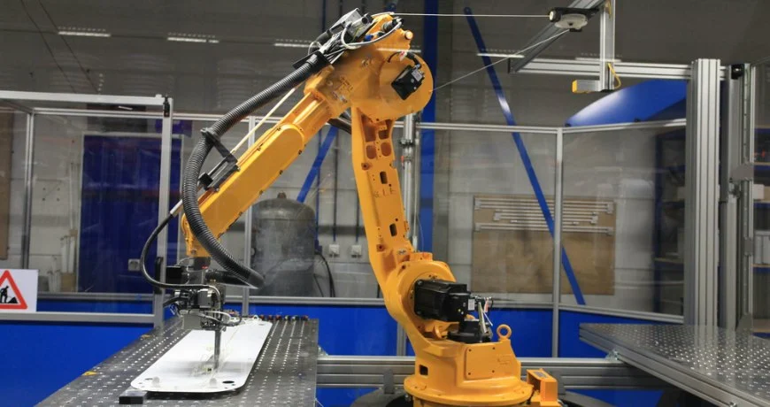
The cartesian robot is the most commonly used industrial robot, typically for CNC machines or 3D printing.
Read More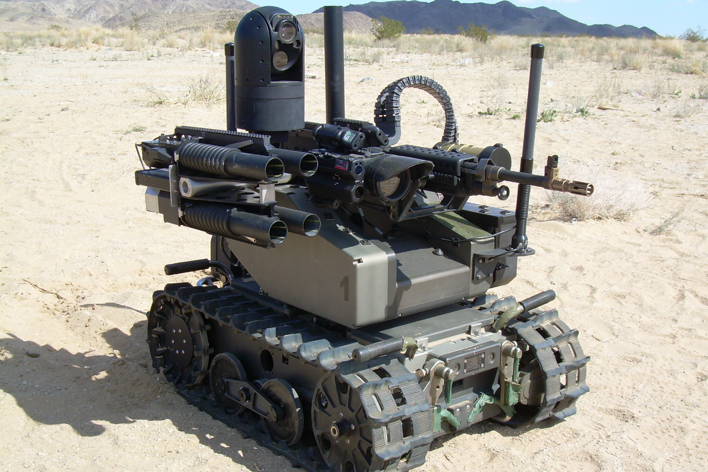
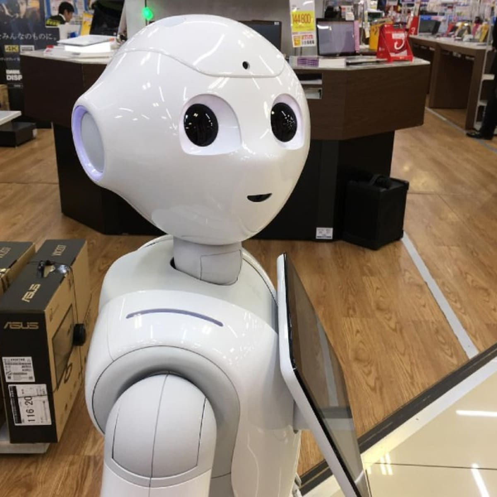
robots are professional service robots intended to interact with customers
Read More